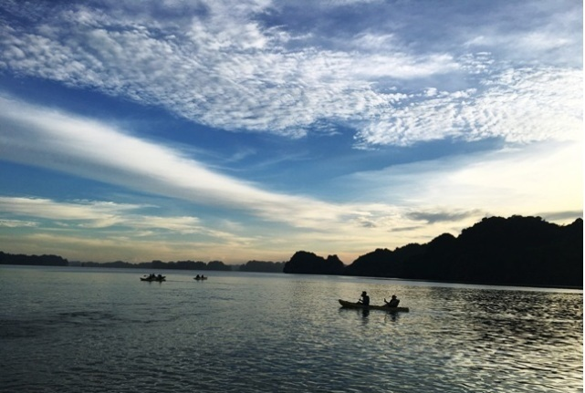

Whatever you are looking for in Vietnam we can help you find it and whatever itinerary you may have in mind we can help you shape it. Our mission is to create exceptional holidays for unforgettable experience, lifetime memories!


Visit the best of Vietnam with this 9 day Vietnam tour including accommodation, meals, Halong Bay cruise, professional guides, in-depth sightseeing and more.. This tour can be reversed starting from Ho Chi Minh City.
Overview
10 Day Vietnam Tour starts from Hanoi
10 Day Vietnam Tour starts from Ho Chi Minh
Prices and Inclusions
Gallery
See the very best of one of our favourite destinations with a 10 day Highlights of Vietnam tour. Starts from the charismatic city of Hanoi then board a boat to cruise the real Halong Bay, marvelling at the spectacular limestone karsts that rise dramatically from the sea. Discover the ancient beauty in Hoi An, and the bustling city of Ho Chi Minh then learn about the history of the eerie Cu Chi Tunnels, and visit the immense Mekong Delta-an epic network of meandering tributaries full of colour and life.
This 10 day Highlights of Vietnam tour is the perfect itinerary for those who are interested in discovering the jamestic beauty of Vietnam with scanty time.
Duration: 10 days / 9 nights
Departure: Daily from Hanoi or Ho Chi Minh City
Type of tour: Group tour
Theme: Traditional culture
Suitable: Family with children, Travel with friends, Solo traveler
10 DAY HIGHLIGHTS OF VIETNAM TOUR ITINERARY STARTS FROM HANOI
Destination: Hanoi - Halong Bay - Da Nang - Hoi An - Ho Chi Minh City - Cu Chi Tunnels - Mekong Delta
DAY 1: ARRIVE IN HANOI
Meals included: N/A | Accommodation: Hotel in Hanoi
Arrive in Hanoi (Noi Bai airport), you will be welcomed and transferred to your hotel in downtown Hanoi for check-in (hotel rooms are available for mid-afternoon check-in).
The rest of the day is at your leisure to explore the tree-lined boulevards, French Indochinese architecture and tranquil lakes of this unique city.
Stay overnight in Hanoi.
DAY 2: HANOI FREE DAY (B)
Meals included: Breakfast | Accommodation: Hotel in Hanoi
The day is at your leisure for sight-seeing or shopping in Hanoi as you wish or take one of the optional excursions available.
Stay overnight in Hanoi.
Optional for day tours in Hanoi:
HANOI CITY GROUP TOUR
HANOI STREET FOOD TOUR
HOA LU AND TAM COC TOUR
MAI CHAU DAY TOUR
PERFUME PAGODA TOUR
DAY 3: HANOI – HALONG BAY – CALYPSO CRUISER (B, L, D)
Meals included: Breakfast, Lunch, Dinner | Accommodation: Calypso Cruiser (12 cabins)
08h00 – 08h30 Pick-up at hotel and start the 3 hour-and-a-half drive to Hon Gai Tourist Wharf, check in Oriental Sails JSC’s private waiting hall – The OS Lounge.
12h15 – 12h45 Embark on Calypso Cruiser by transfer boat. Listen to cruise briefing and receive room key.
13h00 – 15h30 Savor a delectable lunch as Calypso Cruiser cruises further along the limestone islands of Bai Tu Long Bay, heading to Vung Vieng fishing village – one of the largest fishing villages in Halong Bay to see the life of local fishermen.
– Option 1: Take a bamboo rowing boat trip around Vung Vieng Fishing Village.
– Option 2: Take kayak and go kayaking by yourself with help and instruction of tour guide around the Village.
17h30 – 18h00 Return to Calypso Cruiser and have bath then relax as the sun starts to set. Enjoy the Happy Hour at the bar and on the sun deck while cooking demonstration is organizing.
19h00 Dinner is served. Socialize with other guests, night squid fishing or just laze around. Singing and dancing activities are available till 22h00.
Overnight on board at Cong Do Area.
DAY 4: HALONG BAY – HANOI – FLIGHT TO DA NANG – HOI AN (B, L)
Meals included: Breakfast, Brunch | Accommodation: Hotel in Hoi An
06h30 – 07h00 Start your day with Tai Chi exercise on the sundeck.
07h00 – 09h00 Catch morning view of seascapes with a cup of tea or coffee, have breakfast while cruising toward Thien Canh Son Cave. Visit Thien Canh Son Cave – the medium size and less visited cave in Bai Tu Long Bay.
09h30 Check-out room. Luggage can be delivered to the reception area.
09h30 – 11h00 Head back to the Harbor. Have early lunch on board. Disembark Calypso Cruiser at around 12h00.
12h00 – 12h30 Transfer back to your hotel in Hanoi city center with 30 minute break en route to stretch the legs.
16h30 – 17h00 Arrive at your hotel.
Transfer to Hanoi airport for short flight to Danang. Arrival and transfer to Hoi An, a major Asian trading port in the 17th and 18th centuries whose architecture and relaxed lifestyle has changed little over the years. Check in your hotel.
Stay overnight in Hoi An.
DAY 5: HOI AN FREE DAY (B)
Meals included: Breakfast | Accommodation: Hotel in Hoi An
The day is left free to relax in this beautiful area. You could take a taxi or make the easy five-kilometre bicycle ride through the rice paddies and shrimp ponds to Cua Dai beach.
Alternatively Hoi An is one of the best places to shop for souvenirs, especially if you’re looking for t-shirts, paintings or ceramics. For those interested in getting clothes tailored, this is definitely the place to shop.
Another good idea is to take a boat trip out to a village specialising in ceramics and boat-building or visit the local farm in Tra Que Village and have a local home cooked meal including a “banh xeo” a specialty savoury (optional – please contact us directly for tour options).
Stay overnight in Hoi An.
DAY 6: HOI AN – MY SON SANCTUARY – HOI AN (B, L)
Meals included: Breakfast Lunch | Accommodation: Hotel in Hoi An
08h30 Leaving Hoi An crossing the Cua Dai bridge with its spectacular views of the Hoi An river system, mountains and Cham islands, we arrive at the fishing village alive with activity as the market traders sell their evenings catch,providing some great photo opportunities.
09h45 Arriving at My Son, this "Valley of Kings" as described by French historians was once the capital of the Chăm Pa Kingdom from the 4th to 15thcentury. Following a traditional dance performance, your walking tour to the Cham ruins begins with a short ascent along a jungle bordered track. While you explore the area your guide will explain the history of the religious site which served as a burial place for the Cham monarchs centuries ago.
12h00 Commence the drive back to Hoi An to start our boat trip on Thu Bon river. Departing from Nguyen Hoang dock, your boat journey of approximately two hours will take you past Duy Hai fishing village, Tra Nhieu - weaving village, Kim Bong carpentry village and Cam Thanh coconut jungle village.
15h30 The boat trip will finish at Nguyen Hoang dock in the old town.You will be free to explore the old town or return to your hotel.
Rest of the day is free to relax or wander the streets and discover Hoi An on your own.
Stay overnight in Hoi An.
DAY 7: HOI AN – DANANG – FLIGHT TO HO CHI MINH CITY (B)
Meals included: Breakfast | Accommodation: Hotel in Ho Chi Minh
Leisure time until transfer to Danang airport (30km from Hoi An) for the short flight to dynamic Ho Chi Minh City, still called Saigon by the locals (1hr20min duration).
Upon arrival in Tan Son Nhat airport you will be picked up and transferred to your hotel downtown Saigon. The busy city of Saigon, used to be the capital of South Vietnam, is the biggest commercial and cultural centre of Vietnam.
Rest of the day is at your leisure.
Stay overnight in Ho Chi Minh City.
DAY 8: HO CHI MINH – MEKONG DELTA (CAI BE FLOATING MARKET) – HO CHI MINH (B, L)
Meals included: Breakfast, Lunch | Accommodation: Hotel in Ho Chi Minh
Pick up from your hotel at 06h30 then leave bustling Ho Chi Minh for the 2 hour drive to the delta town of Cai Be. The local traditional wooden boats, vast emerald rice fields and lush back waterways; these are the things that make Cai Be such a desired destination.
On arrival board your boat for a cruise of Cai Be floating market. Traders work the river and some have been living on these waters for generations. Produce at the market are hung on a pole in front of boats to attract customers and make it easier for people to see from afar what is on offer. Immerse yourself in a world of lush vegetation from the Mekong Delta as you pick through the fascinating and lively market, watching buyers bargaining for produce.
After visiting the market continue to a cottage factory where ‘pop-rice’, rice paper and coconut candies are made. Return to the boat for the cruise to Tan Phong Island.
Next, take a rowing boat along the maze of shady canals. Head for a local orchard to enjoy the local tropical fruits, and visit artisan workshops to see the handicraft producers of the village at work.
Break for lunch at an orchard garden. Lunch will be local Mekong style serving specialties of the area. Afterwards, you will ride bicycles to villages, sightseeing and soaking up the rural ambiance or enjoy cooking class. If you prefer to relax, you can laze in a hammock.
Following your cruise drive back to Ho Chi Minh City. Arrive at your hotel around 17h30. The evening is at your leisure.
Stay overnight in Ho Chi Minh City.
DAY 9: HO CHI MINH CITY – CU CHI TUNNELS – HO CHI MINH CITY (B, L)
Meals included: Breakfast, Lunch | Accommodation: Hotel in Ho Chi Minh
Take the morning trip to visit Independence Palace, also known as the Reunification Palace, was built on the sight of the former Norodom Palace. The Independence Palace is a widely known landmark of Ho Chi Minh City and was designed by the architect Ngo Viet Thu. Continue seeing the beautiful structures from the French Colonial times such as the Notre Dame Cathedral, the historic Central Post Office. Followed by the remarkable site of the War Remnants Museum, the museum has a vast display of the both the Indochina wars.
Have lunch at local restaurant.
In the afternoon depart for Cu Chi Tunnels, the trip will take approximately one and a half hour bus drive. Upon arrival, before exploring the tunnels, you will have some short introduction followed by introductory video about how the tunnels were constructed and how the people survived in the harsh conditions of the war time. Then, spend your time to explore the remaining area and tunnel systems which included the special constructed living areas with kitchens, bedrooms side by side with other martial facilities like storage, weapons factories, field hospitals, and command centers helping whoever lives inside the tunnels meet their basic needs. Besides, there are also many hidden trap doors and dangerous traps within the maze-like tunnels for security purpose during the war. Afterward, special tea and cassava (guerilla’s food during the war) will be served.
Break time for relax or time for those who want to try the real shooting gun (your own expense).
Return to Ho Chi Minh City. Evening is at leisure.
Stay overnight in Ho Chi Minh City.
DAY 10: HO CHI MINH CITY DEPARTURE (B)
Meals included: Breakfast | Accommodation: N/A
The day is at your leisure for last minute sight-seeing or shopping until your transfer to Ho Chi Minh City airport for your onward flight.
If hotel and other travel arrangements are required, please contact us.
10 DAY HIGHLIGHTS OF VIETNAM TOUR ITINERARY STARTS FROM HO CHI MINH CITY
Destination: Ho Chi Minh City - Cu Chi Tunnels - Mekong Delta - Da Nang - Hoi An - Hanoi - Halong Bay
DAY 1: HO CHI MINH CITY ARRIVAL
Meals included: N/A I Accommodation: Hotel in Ho Chi Minh City
Upon arrival to Ho Chi Minh City (Tan Son Nhat International Airport) you will be picked up and transferred by private car through the city to your hotel for check-in (hotel rooms are available for mid-afternoon check-in).
The buzzing southern city, formerly known as Saigon, is a tantalizing mix of old and new.
Rest of the day is at leisure.
Stay overnight in Ho Chi Minh City.
DAY 2: HO CHI MINH CITY – MEKONG DELTA: CAI BE FLOATING MARKET – HO CHI MINH CITY (B, L)
Meals included: Breakfast, Lunch I Accommodation: Hotel in Ho Chi Minh City
Pick up at your hotel in Ho Chi Minh City around 6h30. Depart for Cai Be by car/van via Trung Luong Expressway.
On arrival in Cai Be, set off for the Cai Be floating market by motor boats and watch the locals trading fruit and many other commodities on their vessels. Visit a small family business to see how coconut candy and crispy rice popcorn are made. Then wander in small villages, visit fruit plantations, accompanied by traditional southern Vietnamese folk music.
Afterwards, paddling through a series of small canals to experience the charm of the Upper Mekong Delta. Arrive in Tan Phong Island, the green pearl where you can enjoy yourself with the nature.
Lunch time is a good chance to get closer with the local and you will learn how to prepare special Vietnamese dishes. Food is cooked by yourself, and fresh river food is served in the heart of the garden.
Cycle in the village path through orchards. Meet the local islanders to learn more about the local daily life in the Mekong Delta.
Take a boat ride back to Cai Be and meet your bus for the trip back to Ho Chi Minh City.
The evening is at your leisure.
Stay overnight in Ho Chi Minh City.
DAY 3: HO CHI MINH CITY – CU CHI TUNNELS – HO CHI MINH CITY – FLIGHT TO DA NANG – HOI AN (B, L)
Meals included: Breakfast, Lunch I Accommodation: Hotel in Hoi An
Take the morning trip to visit Independence Palace, also known as the Reunification Palace, was built on the sight of the former Norodom Palace. The Independence Palace is a widely known landmark of Ho Chi Minh City and was designed by the architect Ngo Viet Thu. Continue seeing the beautiful structures from the French Colonial times such as the Notre Dame Cathedral, the historic Central Post Office. Followed by the remarkable site of the War Remnants Museum, the museum has a vast display of the both the Indochina wars.
Have lunch at local restaurant.
In the afternoon depart for Cu Chi Tunnels, the trip will take approximately one and a half hour bus drive. Upon arrival, before exploring the tunnels, you will have some short introduction followed by introductory video about how the tunnels were constructed and how the people survived in the harsh conditions of the war time. Then, spend your time to explore the remaining area and tunnel systems which included the special constructed living areas with kitchens, bedrooms side by side with other martial facilities like storage, weapons factories, field hospitals, and command centers helping whoever lives inside the tunnels meet their basic needs. Besides, there are also many hidden trap doors and dangerous traps within the maze-like tunnels for security purpose during the war. Afterward, special tea and cassava (guerilla’s food during the war) will be served.
Break time for relax or time for those who want to try the real shooting gun (your own expense).
Return to Ho Chi Minh City and transfer to Tan Son Nhat airport for the short flight to the central port city of Da Nang. Upon arrival, you will be transferred to the UNESCO World Heritage listed town of Hoi An.
Stay overnight in Hoi An.
DAY 4: HOI AN FREE DAY (B)
Meals included: Breakfast | Accommodation: Hotel in Hoi An
The day is left free to relax in this beautiful area. You could take a taxi or make the easy five-kilometre bicycle ride through the rice paddies and shrimp ponds to Cua Dai beach.
Alternatively Hoi An is one of the best places to shop for souvenirs, especially if you’re looking for t-shirts, paintings or ceramics. For those interested in getting clothes tailored, this is definitely the place to shop.
Another good idea is to take a boat trip out to a village specialising in ceramics and boat-building or visit the local farm in Tra Que Village and have a local home cooked meal including a “banh xeo” a specialty savoury (optional – please contact us directly for tour options).
Stay overnight in Hoi An.
DAY 5: HOI AN – MY SON SANCTUARY – HOI AN (B, L)
Meals included: Breakfast Lunch | Accommodation: Hotel in Hoi An
08h30 Leaving Hoi An crossing the Cua Dai bridge with its spectacular views of the Hoi An river system, mountains and Cham islands, we arrive at the fishing village alive with activity as the market traders sell their evenings catch,providing some great photo opportunities.
09h45 Arriving at My Son, this "Valley of Kings" as described by French historians was once the capital of the Chăm Pa Kingdom from the 4th to 15thcentury. Following a traditional dance performance, your walking tour to the Cham ruins begins with a short ascent along a jungle bordered track. While you explore the area your guide will explain the history of the religious site which served as a burial place for the Cham monarchs centuries ago.
12h00 Commence the drive back to Hoi An to start our boat trip on Thu Bon river. Departing from Nguyen Hoang dock, your boat journey of approximately two hours will take you past Duy Hai fishing village, Tra Nhieu - weaving village, Kim Bong carpentry village and Cam Thanh coconut jungle village.
15h30 The boat trip will finish at Nguyen Hoang dock in the old town.You will be free to explore the old town or return to your hotel.
Rest of the day is free to relax or wander the streets and discover Hoi An on your own.
Stay overnight in Hoi An.
DAY 6: HOI AN – DANANG – FLIGHT TO HANOI (B)
Meals included: Breakfast | Accommodation: Hotel in Ha Noi
The morning is left free to relax by the pool or shopping or last sight-seeing in Hoi An before transfer to Da Nang airport for flight to Hanoi (1hr20min duration). Arrival and 45 minute transfer to your hotel for check-in.
The rest of the day is at your leisure to explore the tree-lined boulevards, French Indochinese architecture and tranquil lakes of this unique city.
Stay overnight in Hanoi.
DAY 7: HANOI FREE DAY (B)
Meals included: Breakfast | Accommodation: Hotel in Hanoi
The day is at your leisure for sight-seeing or shopping in Hanoi as you wish or take one of the optional excursions available.
Stay overnight in Hanoi.
Optional for day tours in Hanoi:
HANOI CITY GROUP TOUR
HANOI STREET FOOD TOUR
HOA LU AND TAM COC TOUR
MAI CHAU DAY TOUR
PERFUME PAGODA TOUR
DAY 8: HANOI – HALONG BAY – CALYPSO CRUISER (B, L, D)
Meals included: Breakfast, Lunch, Dinner | Accommodation: Calypso Cruiser (12 cabins)
08h00 – 08h30 Pick-up at hotel and start the 3 hour-and-a-half drive to Hon Gai Tourist Wharf, check in Oriental Sails JSC’s private waiting hall – The OS Lounge.
12h15 – 12h45 Embark on Calypso Cruiser by transfer boat. Listen to cruise briefing and receive room key.
13h00 – 15h30 Savor a delectable lunch as Calypso Cruiser cruises further along the limestone islands of Bai Tu Long Bay, heading to Vung Vieng fishing village – one of the largest fishing villages in Halong Bay to see the life of local fishermen.
– Option 1: Take a bamboo rowing boat trip around Vung Vieng Fishing Village
– Option 2: Take kayak and go kayaking by yourself with help and instruction of tour guide around the Village.
17h30 – 18h00 Return to Calypso Cruiser and have bath then relax as the sun starts to set. Enjoy the Happy Hour at the bar and on the sun deck while cooking demonstration is organizing.
19h00 Dinner is served. Socialize with other guests, night squid fishing or just laze around. Singing and dancing activities are available till 22h00.
Overnight on board at Cong Do Area.
DAY 9: HALONG BAY – HANOI (B, L)
Meals included: Breakfast, Brunch | Accommodation: Hotel in Hanoi
06h30 – 07h00 Start your day with Tai Chi exercise on the sundeck.
07h00 – 09h00 Catch morning view of seascapes with a cup of tea or coffee, have breakfast while cruising toward Thien Canh Son Cave. Visit Thien Canh Son Cave – the medium size and less visited cave in Bai Tu Long Bay.
09h30 Check-out room. Luggage can be delivered to the reception area.
09h30 – 11h00 Head back to the Harbor. Have early lunch on board. Disembark Calypso Cruiser at around 12h00.
12h00 – 12h30 Transfer back to your hotel in Hanoi city center with 30 minute break en route to stretch the legs.
16h30 – 17h00 Arrive at your hotel.
Spend leisure time to relax or discover Ha Noi on your own.
Stay overnight in Hanoi.
DAY 10: HANOI DEPARTURE (B)
Meals included: Breakfast | Accommodation: N/A
The day is at your leisure for last minute sight-seeing or shopping until your transfer to Noi Bai, Hanoi airport for your onward flight.
If hotel and other travel arrangements are required, please contact us.
TOUR PRICES:
- Prices are in US dollars and per person based on half twin.- Single supplement surcharges are applied for solo travelers who occupy a single room (twin/ double bedded room for single use).
| Tour Program | Price per person on twin basis |
Single Supplement Surcharge |
| 10 Day Vietnam Tour starts from Hanoi (3* hotels) | 529 USD | 245 USD |
| 10 Day Vietnam Tour starts from Ho Chi Minh (3* hotels) | 539 USD | 255 USD |
PACKAGE INCLUDES:
* 9 night accommodations (3* hotels):
– Hanoi: Imperial Hanoi Hotel, Deluxe room with City View;
– Halong Bay: Calypso Cruiser (12 cabins), Deluxe cabin with Sea View;
– Hoi An: Eem Hotel Hoi An, Deluxe room with City View or Hoian Central Hotel, Deluxe room with City View
– Ho Chi Minh City: Prague Hotel, Deluxe room with City View or Ruby River Hotel, Deluxe room with City View
* Transportation:
– Full transportation by air conditioned vehicles as tour program indicated.
– Airport transfers in Hanoi, Da Nang and Ho Chi Miinh City by private car.
* Sightseeing and tours:
– Halong Bay 2 day 1 night trip with Calypso Cruiser (incl welcome drinks on board, 02 lunches, 01 dinner, 01 breakfast, Deluxe cabin with air-conditioner and en-suite bathrooms, one hour kayaking, Tai Chi class, cruise to Bai Tu Long Bay, visits to Vung Vieng Fishing Village, Thien Canh Son Cave, on-board insurance);
– Full day tour to My Son Sanctuary with lunch;
– Full day tour to Mekong Delta – Cai Be floating market with lunch;
– Full day tour to Cu Chi Tunnels and Ho Chi Minh City with lunch;
– Entrance and sightseeing fees as tour program;
– English speaking guide as tour program;
– Meals as mentioned (09 Breakfasts, 05 Lunches, 01 Dinner);
PACKAGE EXCLUDES:
– Flights to and from Vietnam not mentioned in the program and above quotation;
– Domestic flight tickets from Hanoi to Danang and Danang to Ho Chi Minh City;
– Visa to Vietnam;
– Other meals not mentioned in program;
– Tips and emergency transfers;
– Optional tours;
– Surcharges for other language guides;
– Personal travel insurance;
– Personal expenditure, such as drinks, souvenirs, laundry, and camera fees, communications, postage, gratuities etc…;
– Early check-in and late check-out at hotels, if not mentioned in the program;
– Seasonal surcharges and blackout dates may apply;
– Extra nights may be required at passenger expense due to flight schedules.
NOTES ON OUR PRICES:
– Prices shown are based on group tour and two people travelling together and sharing a room. Single supplement applies to solo travellers who occupy a single room.
Private tour can be arranged for you, your family or your friends exclusively. Prices may vary according to number of guests. Please contact us to get the best possible price.
– Prices may vary according to your travel time and are higher in the high season, e.g. Christmas period (Dec 24-26), New Year period (Dec 31-Jan 02) and Public holidays of Vietnam.
– For additional hotel night cost to the packages, please contact us for the rates.
– Listed hotels/cruise subject to change to others of similar standard if fully booked.
– Upgrades available to stay at a 4 or 5-star hotel, please contact us for more details. Additional costs will be applied.
– This tour package can be fully customizable to fit your travel plan. You can also disregard full package tours and choose whatever travel items you need we can quote the tours you really want. Usually travel insurance is not covered in our quotations.
– Itinerary Change to the confirmed itinerary may happen because of traffic, weather, or any other conditions not under our control such as war, strike, fire, acts of government, riot, etc. We will do our best to make sure that all the travel will be similar. Go Viet Travel can substitute the itinerary upon your agreement.
– Transportation and Restaurants: The cars, vans or coaches for the land transportation should be in good shape with air conditioner. All restaurants should be tidy and clean.


